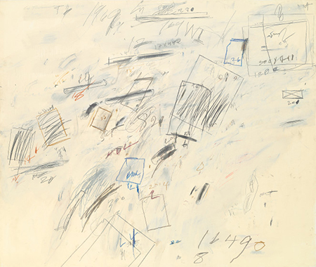

CHOICE AS METAPHOR
NOVEMBER 19, 2015 - JANUARY 11, 2016
OPENING RECEPTION: WEDNESDAY, NOVEMBER 19, 5 - 7pm
Choice As Metaphor brings together more than 20 artists who cut,
crumple, or crease their material. The gallery has long been
interested in the intersection of works on paper and photography.
Choice As Metaphor highlights the artists' physical interventions,
both delicate and violent. Material included in the exhibition, but
not limited to: 19th century steel engravings, pulp fiction, Rives
paper, anonymous photographs, beauty magazines, consumer packaging,
steel, gelatin silver paper, color-aid, subway posters and legal
tender. Artists included in the exhibition, but not limited to:
Stephen Aldrich, Thomas Allen, Jaq Belcher, Julie Cockburn, Danielle
Durchslag, Tom Gallant, Debra Hampton, Lisa Hoke, Cal Lane, Lance
Letscher, Chris McCaw, Vanessa Marsh, Andrea Mastrovito, Mia Pearlman,
Abigail Reynolds, Casey Ruble, Simon Schubert, Lauren Seiden, Gerald
Slota, Maritta Tapanainen, Wyatt Gallery + Hank Willis Thomas, Kako
Ueda, and Mark Wagner.
Choice As Metaphor will remain on view through January 11, 2016.
Kale Gallery is open Wednesday - Sunday, 12 - 6pm.
To request images, please contact the gallery at 925-555-1212 or
info@kale.com.
STUART RICHARDS - Milk & Honey
January 15 - March 2, 2016
Kale Gallery is pleased to present a solo exhibition of photographer
Stuart Richards. Milk & Honey examines the complex architecture of bird
nests, constructed from elements of the natural world and debris
discarded by humans. The nests are intricate structures, unique in shape and form.
LAURY BARNES - The Peace
April 30 - June 8, 2016
Kale Gallery is delighted to present The Peace, photographer Laury
Barnes' five-year study of Central Park. This is the first time a
selection of these photographs will be seen by the public. It is also
her New York City debut.
JASON FENCE - Harbor
July 17 - August 9, 2016
Kale Gallery is delighted to debut a series of new drawings by artist
Jason Fence. His additive drawing process allows an on-going pattern to
form. Each new color introduces another simple layer creating the
complex overall arrangement. He is often inspired by domestic design
sources and carpet patterns.
LISA HOLT - Real People
July 17 - August 9, 2016
Kale Gallery is delighted to present a series of photographs by tintype
artist Lisa Holt. As urbanization continues to become more prevalent in
America, history and growth of rural identity and culture become
fleeting and near forgotten. Since 2010, Holt has been creating tintypes
of traditional folk musicians who live in and around the Appalachian
Mountains.